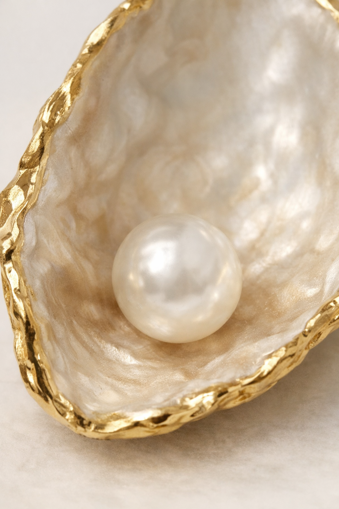

Something brought you here today — and that matters. Whether you arrived through a referral or found your own way, this is a space built entirely for you. At The Ignite Practice, therapy is about coming home to yourself — not a version shaped by expectation or pressure, but the truth of who you are beneath everything you’ve carried. I believe deeply in the art of seeing people with compassion and holding hope. My role is to walk with you, to shine a light on your potential, and to help you find your way back to yourself. Your pain is real. Your potential is too. You don’t have to choose between them. Drawing from Compassion Therapy, CBT, DBT, ACT, Person‑Centred principles, and trauma‑informed practice, I integrate each session uniquely for you and your needs — always with gentleness, clarity, and care.
Book a Free Consultation
A pearl is nothing more than a wound that healed beautifully. When a grain of sand gets inside an oyster it becomes an irritant — it’s not supposed to be there, so it causes pain. The oyster can’t remove it or spit it out or escape it, so instead it coats it layer by layer until the very thing that was hurting it becomes the most valuable thing inside of it.
The wound didn’t disappear — it transformed. That’s you. The thing you went through, the thing that almost broke you, wasn’t supposed to destroy you. Every layer of healing you put over that wound adds value to who you are becoming. It doesn’t disqualify you — it differentiates you.
But the pearl doesn’t form overnight. It takes years, layers on top of layers, built slowly in the dark. And all the while, the oyster has no idea what it is becoming.
The person who goes through the fire and comes out carries something. That’s not a burden. That’s not a scar. That’s a pearl.
So know this — your story is not a stain. It’s the raw material. Everything you survived is slowly becoming the most valuable thing about you. And the moment you stop hiding the wound is the moment the pearl gets to be seen.
Most of us were never taught how to truly understand ourselves. We learn to cope, to perform, to push through — but rarely to pause and ask: What is actually happening for me right now?
Counselling is that space. It’s a place where you can lay down what you’ve been carrying, organise thoughts that have never had room to breathe, and speak things out loud that have only ever lived inside you.
There is something quietly powerful about being truly heard — not fixed, not judged, not rushed. Just seen.
Together, we work toward alignment — a growing clarity about who you are beneath everything that has happened to you and everything that has been placed on you.
This isn’t about becoming someone new. It’s about coming back to yourself.